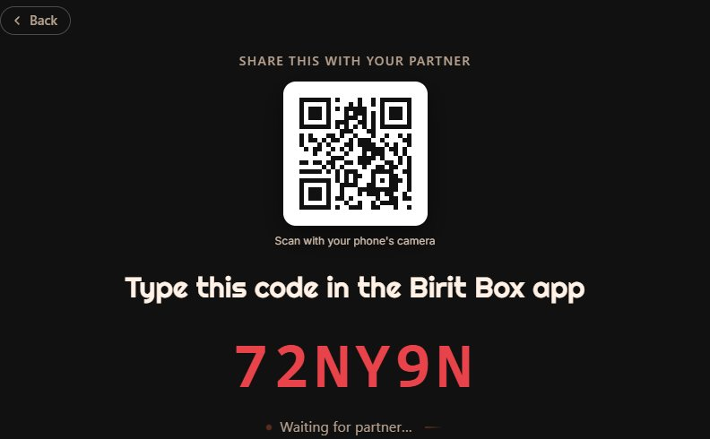

Privacy Policy
Effective November 18, 2026
The short version: Birit Box has no user accounts and no server that collects your data. What you do in the app stays on your device. Your voice and video leave your device only to reach the people in your session, or the live platform you choose to stream to.
This policy covers the Birit Box apps for Windows and Android and this website. "Birit Box", "we" and "us" mean the team that makes Birit Box.
1. What stays on your device
Birit Box saves these only on the device you use it on. We never receive them:
- the name or tambayan name you type in, and your settings;
- your song queue and singing history;
- your recordings (camera, voice and song);
- in the Windows app, your live-streaming setup: stream keys and your Facebook or YouTube connection (see section 5).
Uninstalling the app, or clearing its data, removes them.
2. Microphone and camera
Birit Box uses your microphone and camera only while you sing, record or go live, and only after you allow it.
- Your voice goes to the other singers in your session (Group, Duet and Tapatan), device to device.
- Your camera shows on your own screen and in your own recordings. It is not sent to the other singers.
- When you go live, your voice and video go to the live platform you pick.
They are never sent to us.
2a. Camera safety check
To keep Birit Box family-friendly, the app checks your camera picture, and any video you upload, for explicit content. This check runs entirely on your device:
- no picture or video is sent anywhere or saved;
- no person ever sees it; and
- nothing is reported or kept about you. If something inappropriate is found, that picture is simply blurred.
The check uses NSFWJS (MIT License) and TensorFlow.js (Apache License 2.0), which run inside the app.
3. Duet and Tapatan over the internet
For Duet and Tapatan between two places, you share a code, and the two devices connect directly to each other. To find each other, they briefly use public connection services (including one from Google). These can see your device's IP address — never your voice, video or name.

Keep your code and link private. Share them only with the person you're singing with — anyone who has them can join your session while it's open. Don't post them publicly or send them to people you don't know.
4. YouTube
When you sing to a YouTube karaoke video, the video plays through YouTube's own player (youtube-nocookie.com). YouTube's Terms of Service and the Google Privacy Policy apply to what you watch there.
5. Going live (Windows app)
With a stream key
The stream key you paste is saved on your PC only and is sent only to the platform it belongs to (Facebook, YouTube, TikTok, or the server you entered).
With Facebook Login
If you choose Facebook Login, you sign in on Facebook's own page — Birit Box never sees your password. Birit Box asks Facebook for these permissions and uses them only as described:
| Permission | What Birit Box does with it |
|---|---|
public_profile | Shows your name as "Connected as …" |
publish_video | Starts the live video you ask for, and ends it when you press End live |
pages_read_engagement | Reads the name of the Page you chose, so you can go live on it |
pages_manage_posts | Starts and ends the live video on that Page |
Birit Box does not read or post anything else: no messages, friends, photos, posts or comments.
With YouTube Login
If you choose YouTube Login, you sign in on Google's own page. Google's screen says "Manage your YouTube account" — YouTube has no smaller permission for making a live. Birit Box uses it only to read your channel's name, create the live broadcast you ask for, and end it. It never changes or deletes your videos, comments or playlists. Birit Box's use of information received from Google APIs follows the Google API Services User Data Policy.
Where the connection is kept
The sign-in Facebook or Google gives back is saved on your PC only, and used only to talk to Facebook or YouTube. Press Disconnect in Birit Box to delete it from your PC. To remove Birit Box's access on the platform as well, see Data Deletion.
What you stream is public or private according to the platform's own settings, and their privacy policies apply to it.
6. This website
This website has no sign-up, no analytics, no ads and no tracking cookies. Our hosting provider keeps standard server logs (such as IP address and browser type) and uses a cookie to block automated bots.
Contact form. When you send us a message, the name, email and message you type are delivered to our inbox through Web3Forms, a form service. We use them only to reply to you, and you can ask us to delete them at any time.
6a. Birit Sessions (public listings)
When a host opens or schedules a public Duet, Tapatan or Group with Show on the website turned on (it can be turned off), the Birit Sessions page shows its pub name, Pub #, host name, mode, start and end time, how many are listening and the song on now.
- Live sessions are read straight from the host's Birit Box app through the same public connection services described in section 3. Nothing is stored: when the app closes, the listing is gone.
- Scheduled sessions are signed by the host's device and posted to public relay services, so the page can show them while the app is closed. They carry only the details above, expire when the session's hour ends, and are removed when the host cancels. Each device has its own anonymous key — no account, email or phone number.
- Listeners get a 10-minute guest code; the host lets each one in. Chat and reactions in a session go device to device and are not stored.
7. Sharing and selling
We don't sell or share your information. The only thing we receive is a message you choose to send us through the contact form.
8. Children
Birit Box is a general-audience app. The Facebook and YouTube features are only for people who meet those platforms' own age requirements.
9. Your choices
You can turn off the microphone or camera at any time, disconnect Facebook or YouTube, and delete everything Birit Box saved by clearing its data or uninstalling it. Step-by-step instructions are on the Data Deletion page.
10. Changes
If Birit Box starts handling information differently, we'll update this page and its date before the change.
11. Contact
Questions about privacy? Send us a message.